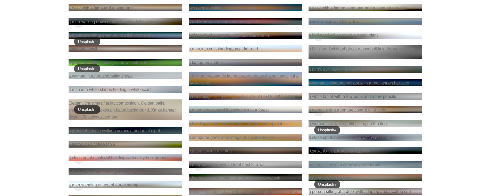
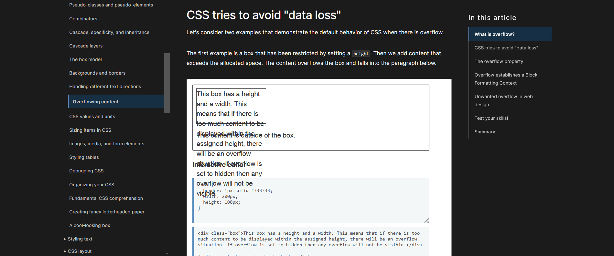
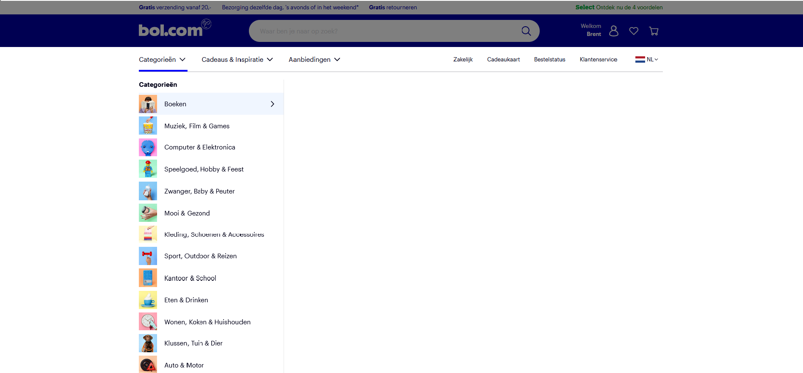
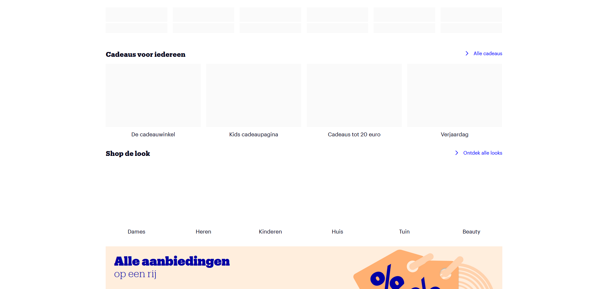

1. Afbeeldingen
Afbeeldingen zijn in veel gevallen essentieel voor het gebruiken van het web. Denk hierbij aan teksten die refereren naar afbeeldingen.
Ik wilde gaan kijken naar de website 'unsplash.com', een website met een grote collectie aan gratis foto's, om te zien hoe zij foto's weergeven als deze er niet zijn. Hieronder het resultaat:
Unsplash geeft visueel beperkten alsnog toegang tot de inhoud van de foto door een alt tekst toe te voegen met daarin informatie over de foto.
Ik was ook benieuwd naar of sites als 'developer.mozilla.org' blokken met code zouden weergeven. Zoals ik had verwacht bleef deze er wel gewoon staan, aangezien het niet een 'img' element is.
2. Custom fonts
De boot heeft een motor. Als de motor uitgezet wordt, is de boot nog steeds bruikbaar met peddels.
3. Kleur uitzetten & kleurenblindheid instellen
Een van de meeste belangrijke manieren van communicatie in web design is kleur. Het is handig om doormiddel van kleur iets te communiceren naar mensen, maar het is een uitdaging voor de 300 miljoen mensen wereldwijd met een vorm van kleurenblindheid.
Soorten kleurenblindheid
- Rood-groen kleurenblindheid
- Blauw-geel kleurenblindheid
- Monochromasie
Deze komt het meest voor en zorgt ervoor dat de persoon rood en groen door elkaar heen haalt.
Het komt minder vaak voor maar dit zorgt ervoor dat de persoon blauw en geel door elkaar haalt.
Dit is de meest zeldzame vorm van kleurenblindheid en zorgt ervaar dat de persoon helemaal geen kleur ziet.
Best practices om een kleurenblindheid vriendelijke website te maken
- Vertrouw niet teveel op kleur voor communicatie
- Maak gebruik van icons en symbolen
- Gebruik textuur en patronen
- Gebruik labels
- Ga voor bold
- Maak goed gebruik van contrast
- Vermijd bepaalde kleuren combinaties
- Omarm minimalisme
Bekijk een website als iemand die kleurenblind is
Open de rendering tool en klik op ‘emulate vision deficiencies’ en selecteer een type kleurenblindheid.
Of hover op een element en kijk naar de contrast score
4. Muis/Trackpad
Tabindex kan je op html elementen gebruiken die niet tabbaar zijn. Er zijn een aantal interactieve elementen die standaard tabbaar zijn zoals: a button details input select textarea etc.
5. Breedband internet
De boot heeft een motor. Als de motor uitgezet wordt, is de boot nog steeds bruikbaar met peddels.
6. Javascript
JavaScript is niet altijd beschikbaar en het is niet de schuld van de gebruiker
Ongeveer 1% van alle gebruikers van het web zetten JavaScript bewust uit. Veel developers denken dat dit betekent dat ze deze mensen buiten kunnen sluiten. Ze vergeten dat 1% nog steeds een groot getal is, vooral relatief gezien. Voor een site als bijvoorbeeld BuzzFeed is 1% 13 miljoen requests per maand.
Een paar redenen waarom gebruikers een website ervaren alsof er geen JavaScript aanwezig is:
1. De browser herkent de JavaScript code niet
Als je JavaScript-bestand methoden of eigenschappen bevat die de browser niet begrijpt, wordt het script niet uitgevoerd.
2. Browserextensies kunnen JavaScript breken
Browser-plug-ins gebruiken JavaScript om webpagina's te wijzigen en functionaliteit toe te voegen. Maar dit loopt het risico te breken, afhankelijk van hoe goed het JavaScript van de site en het JavaScript van de plug-in is geschreven.
3. Sommige browsers schakelen JavaScript uit bij trage verbindingen
Chrome op Android schakelt JavaScript bijvoorbeeld automatisch uit bij langzame verbindingen om de laadtijden van pagina's te versnellen.
4. JavaScript kan mogelijk niet worden gedownload
Zoals bij elke HTTP-aanroep, kan het verzoek om het JavaScript van je site niet worden geladen. Dit kan gebeuren in een trein omdat de verbinding stopt voordat het script is gedownload.
5. Bedrijfsfirewalls en mobiele operators blokkeren JavaScript
Sky Broadband heeft bijvoorbeeld ooit per ongeluk JQuery geblokkeerd, waardoor veel sites kapot gingen.
6. Sommige browsers voeren geen JavaScript uit
Sky Broadband heeft bijvoorbeeld ooit per ongeluk JQuery geblokkeerd, waardoor veel sites kapot gingen.
Mijn onderzoek
Hoe meer je site afhankelijk is van JavaScript, hoe slechter de ervaring waarschijnlijk zal zijn wanneer JavaScript niet beschikbaar is. Als je te maken hebt met tekst, afbeeldingen, video's en formulieren, geef de HTML dan weer op de server. Geen JavaScript nodig, dit is robuuster en houdt meer rekening met performance.
Om uit te testen hoe erg missende JavaScript een site beperkt, heb ik de JavaScript uitgezet op de site van bol.com.
Vergeleken met veel andere sites houdt bol.com erg goed rekening met mensen die geen JavaScript (kunnen) gebruiken. Bijna de hele site werkt, inclusief het bestellen van spullen en het beheren van je account, wat tegen mijn verwachting in gaat.
Dingen die niet werken is wanneer je het menu openklapt, en in dit menu een sub-menu openklapt. Ook werkt de chatbot niet. Sommige foto's laden ook niet in.
 7. Cookies en localStorage
De boot heeft een motor. Als de motor uitgezet wordt, is de boot nog steeds bruikbaar met peddels.
8. Content blockers en ad blockers
De boot heeft een motor. Als de motor uitgezet wordt, is de boot nog steeds bruikbaar met peddels.